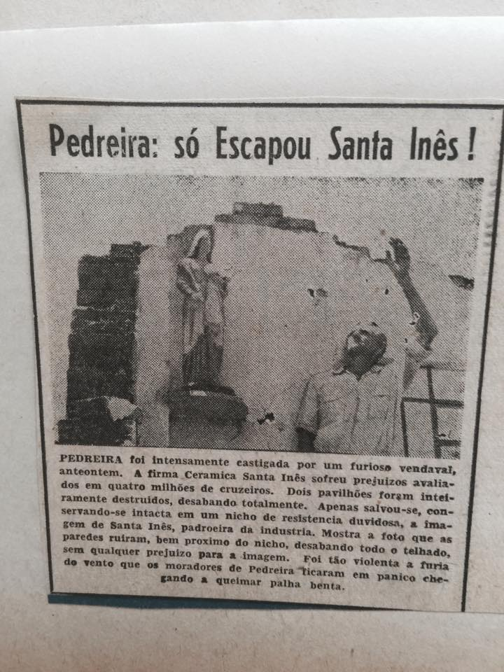

PEDREIRA was heavily struck by a furious windstorm the day before yesterday. The company Cerâmica Santa Inês suffered losses estimated at four million cruzeiros. Two pavilions were completely destroyed and collapsed entirely. The only thing that survived, remaining intact in a niche of doubtful resistance, was the image of Saint Agnes, patron saint of the industry. The photo shows that the walls collapsed very close to the niche and the entire roof fell down without causing any damage to the statue. The force of the wind was so violent that the residents of Pedreira panicked and even burned blessed straw.